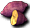

官方公告
來自官方公告
※打倒特定怪物時，
※有時會掉落新年活動專用的食材。
※（越強的怪物，掉落率越高。）
※把那些食材拖曳到加利卡拉中央的「加利卡拉鍋」交給它，
※就會變成能回復HP等的料理回來。
※不過，那可是女巫做的不可思議的鍋子。
※有時什麼都不會發生，也可能會變成從材料難以想像的
※怪異料理。
※可以挑戰無數次，會做出什麼料理，
※請務必親眼確認看看。
活動道具
※食材重量0，[綑綁數:99]
※料理重量0，[綑綁數:20]
※食材、料理在活動期間結束後都會消失
完成的料理一覽
| 食材 | 料理A | 料理B | 料理C | 料理D |
 米 米 | 栗金團 |  年糕 年糕 | 年糕湯 | 豪華年糕湯 |
 地瓜 | 蔬菜湯 | 栗金團 | 年糕 | |
| 鮭魚尾巴 | 100％鮮榨果汁 | 魚的燻製品 | 蔬菜湯 | 年糕湯 |
牛排肉
 藍莓 藍莓 | 100%鮮榨果汁 | |
 石榴 石榴 | 100％鮮榨果汁 | 蔬菜湯 |
 香蕉 香蕉 | 100％鮮榨果汁 | |
 蘑菇 蘑菇 | 蔬菜湯 | 豪華年糕湯 |
| 新鮮茄子 | 蔬菜湯 |
新鮮蘋果
 柳橙 柳橙 | 100％鮮榨果汁 | 年糕湯 | 豪華年糕湯 |
天然水
食材・料理
食材・料理一覽
留言
素材→料理的資訊等請寫在這裡。
沒有留言。留言/活動「2007年新年活動」?
- &#